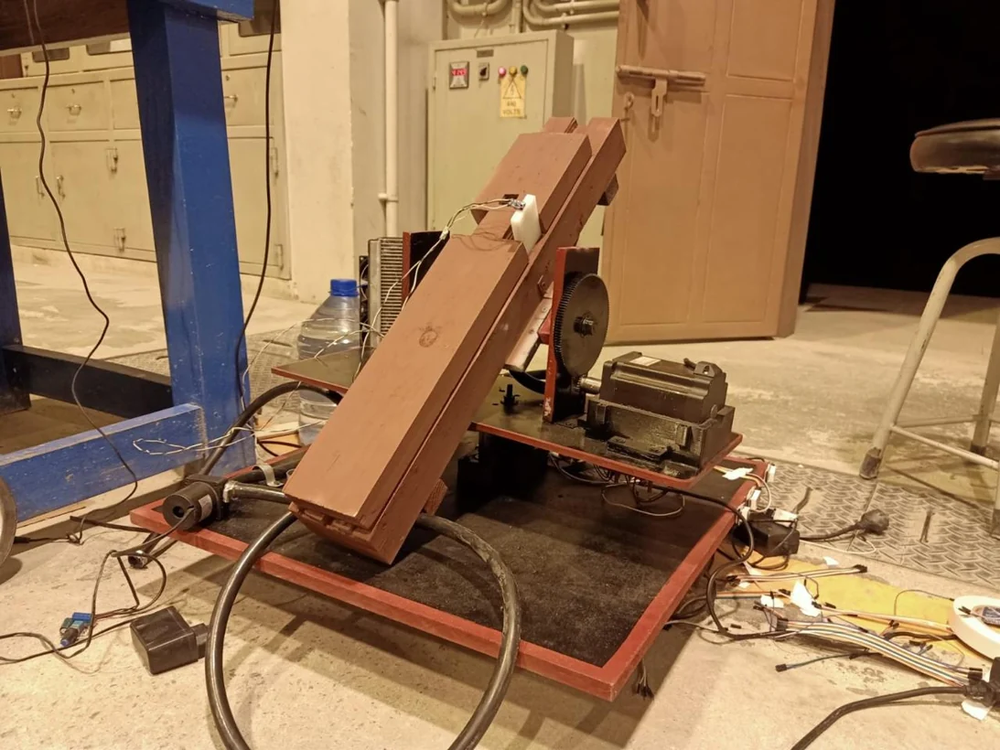
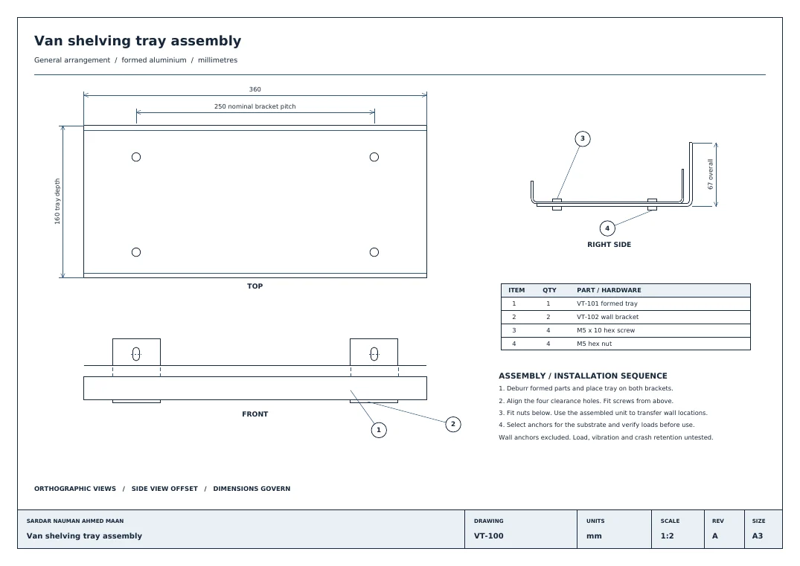
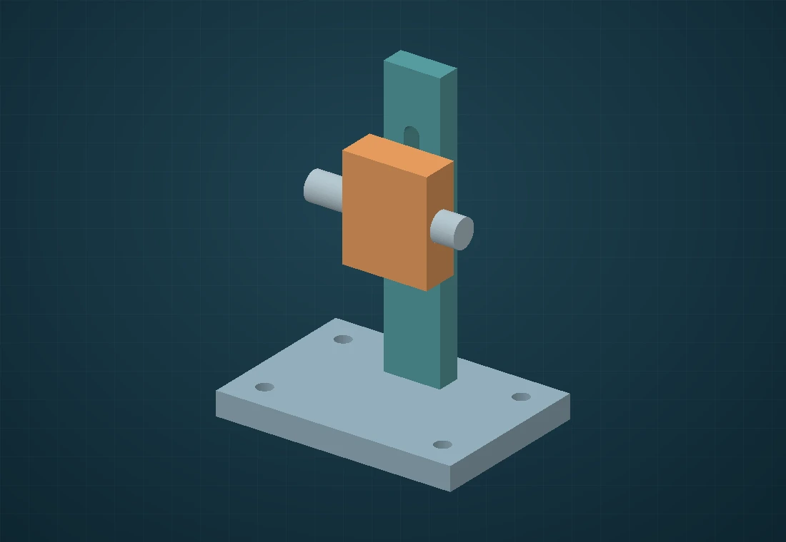
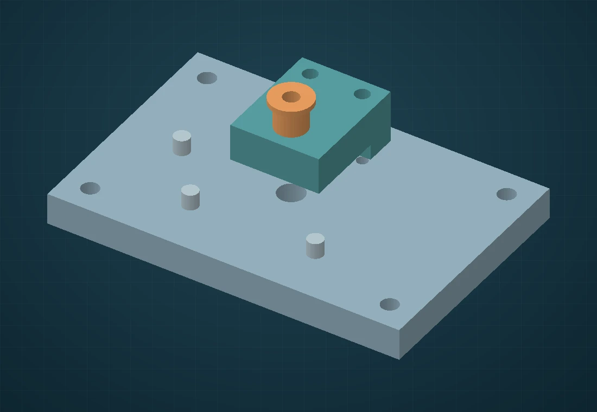
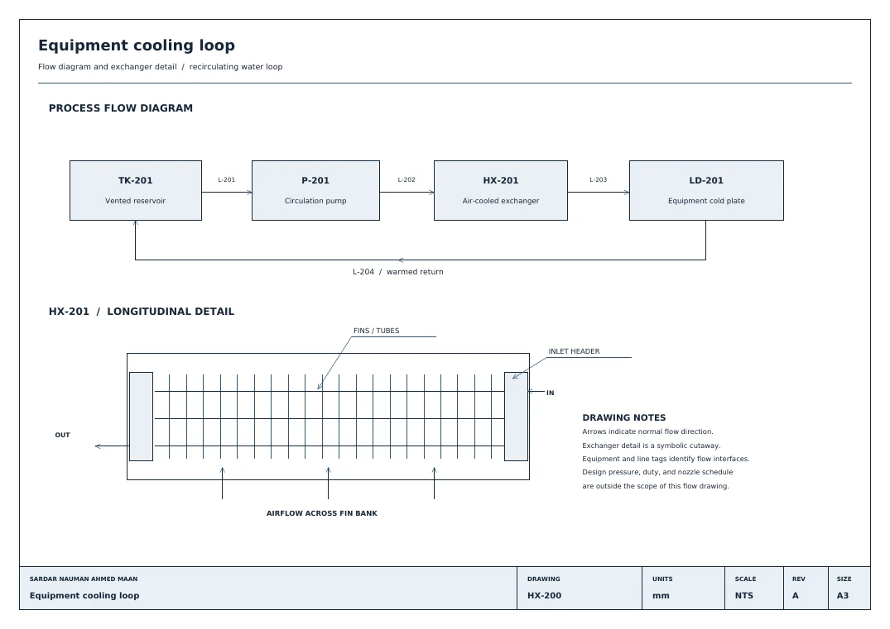

Mechanical design portfolio · Calgary, AB
Design & drafting
Mechanical assemblies and dimensioned drawings for sheet metal, automation, machining, and process equipment. Browse the project files in PDF, STEP, and DXF.


NUST mechanical engineering capstone
Motorized test platform
From a SolidWorks assembly to a working lab prototype. The project covers pitch and yaw positioning, stepper-motor mounting, copper-rail cooling integration, and bench testing.
Sheet-metal fabrication · VT-100
Van shelving tray
A 360 × 160 mm aluminium tray for service-vehicle storage. Two identical wall brackets simplify the parts list. The tray bolts on from above so it can be removed separately from the wall mounts.
Drawings and CAD files
The drawing set includes an assembly BOM, orthographic views, part dimensions, forming notes, and an installation sequence. The flat files use separate cut and bend-reference layers.
- Materials
- 5052-H32 aluminium, 2 mm tray and 3 mm brackets
- Fabrication
- Laser cut and press-brake form
- Nominal CAD check
- 11 solids with no solid interference
Confirm bend allowances with the fabricator. Vehicle attachment and payload ratings depend on vehicle-specific installation and testing.

Machine automation · SM-100
Adjustable sensor stand
A height-adjustable mount for an M12 barrel sensor on a machine or inspection station. Two screws spaced 20 mm apart clamp the carriage through a single slot and constrain its rotation. The sensor itself can be adjusted axially using the barrel locknuts.

Mounting and adjustment
Four clearance holes fix the 100 × 70 mm base to the machine. Recessed fastener heads let the base sit flush. The nominal sensor centreline adjusts from 61.3 to 94.7 mm above the mounting surface.
- Materials
- 6061-T6 aluminium
- Interfaces
- M4 upright mount, M6 carriage clamp, Ø12.2 mm sensor bore
- Drawing set
- Assembly BOM, base hole chart, upright and carriage details
Machining & workholding · DF-200
Drill locating fixture
A fixture for locating and drilling a Ø6 mm hole in a 78 × 40 × 6 mm blank. Two dowels establish the long edge, a third locates the short edge, and a hardened-steel bushing guides the drill.

Workpiece location and tool clearance
The hole centre is 39 mm and 20 mm from the located edges. The stepped guide clears the blank and leaves access for a separate clamp. A Ø10 mm opening below the workpiece gives the drill clearance at breakthrough.
- Materials
- 6061-T6 base and guide, hardened-steel bushing
- Inspection
- Coordinate hole table and ±0.05 mm locator-centre tolerance
- Drawing set
- Assembly BOM, setup sequence, base, guide and bushing details
Mechanism design · SolidWorks
Mechanisms & prototyping
Six-axis robotic manipulator
I modelled the base, shoulder, elbow, and wrist as an articulated assembly. The motion study shows how the linked components move through a programmed sequence and supports review of joint arrangement and clearance.
Motorized test platform
For my NUST capstone, I worked on a SolidWorks platform with pitch and yaw actuation, 3D-printed stepper-motor mounts, and an integrated copper-rail cooling system. I supported prototype assembly and testing.
Process equipment · HX-200
Equipment cooling loop

Process flow and exchanger detail
The drawing traces water through a vented reservoir, circulation pump, air-cooled exchanger, and equipment cold plate. The exchanger detail shows the tube paths, fin bank, and header interfaces.
This flow sheet defines routing and equipment interfaces. Pressure, thermal duty, and instrumentation require separate specifications.